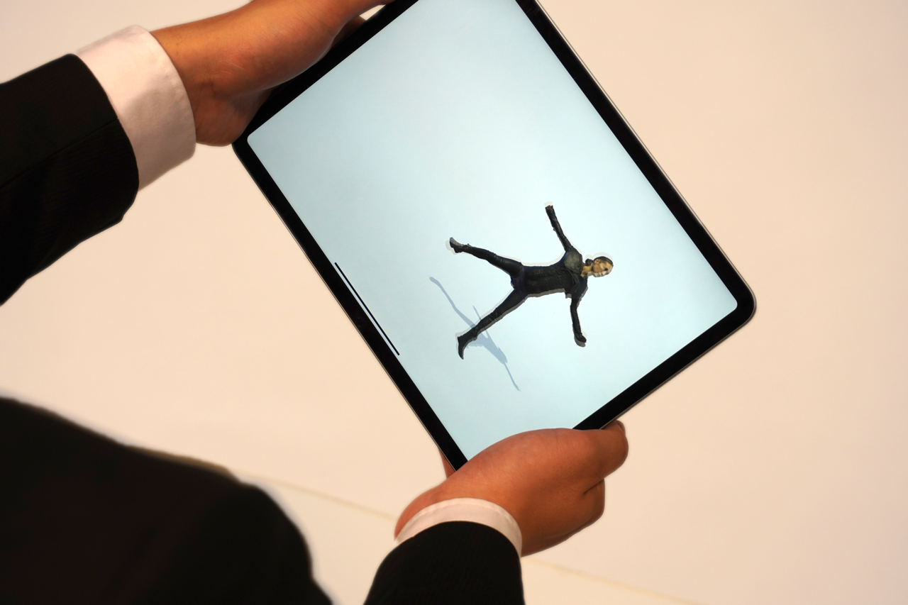
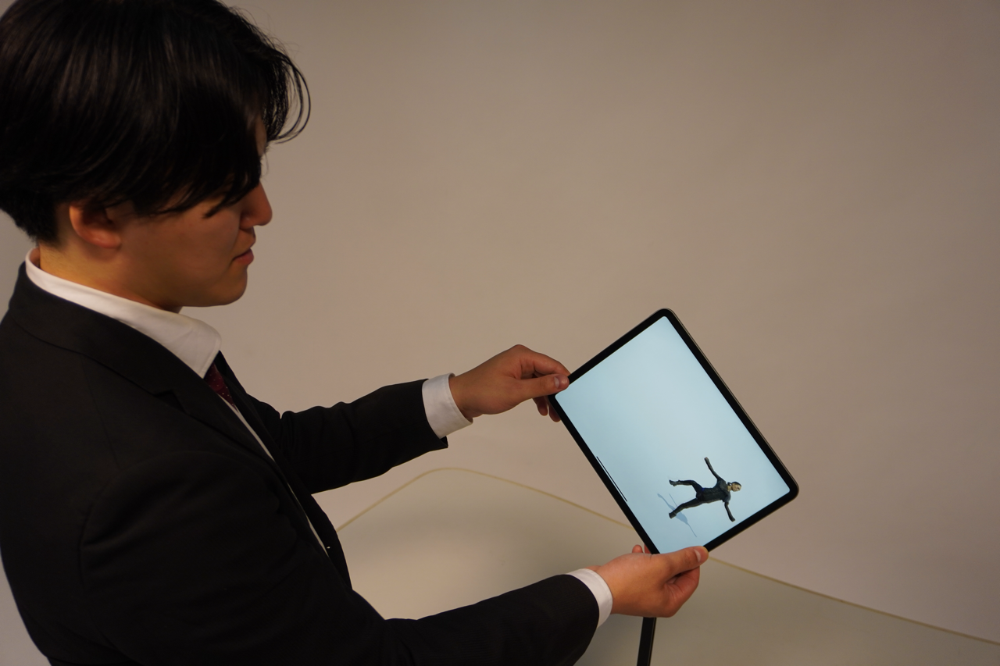
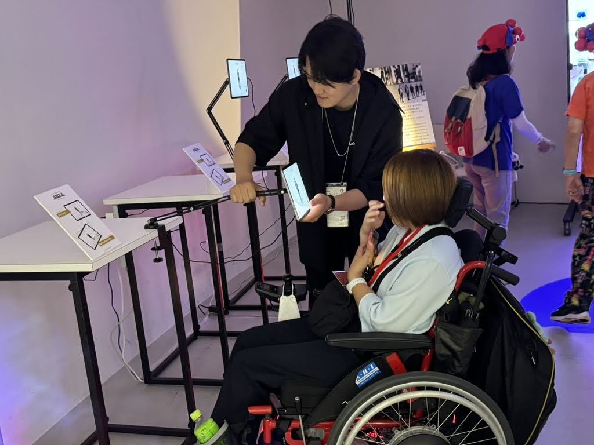

YEAR
TYPE
ARカタログ
2025
未来のおむつを着用した人の動きを、バーチャル空間上で可視化するアプリケーションを開発しました。 実際のモデルさんにご協力いただき、モーションデータを取得しています。 タブレットを傾けたり、画面をタッチしたりすることで、未来のおむつを穿いた人の動きをインタラクティブに閲覧できます。
本システムは、大阪・関西万博2025の「O-MU-TSU WORLD EXPO presented by 一般社団法人Dream Investment JAPAN」にて展示された取り組みです。


